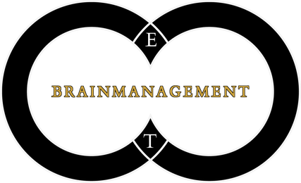

Dynamische Meditatie
Therapeut

De opleiding Dynamische Meditatie Therapeut is een traject aangeboden door groepspraktijk Brainmanagement, onder supervisie van neuropsychiater dr. Tom Herregodts.
De opleiding bestaat uit twee aansluitende, maar aparte delen. De insteek van beide delen is duidelijk verschillend.
Het eerste jaar noemen we "The art of self-knowledge" omdat het een cruciale verdieping is voor iedereen die therapeutisch werk wil doen. Voor we de ander bewust en bekwaam kunnen maken, hebben we voldoende kennis en vaardigheden nodig bij onszelf. Daarnaast leer je tijdens het eerste jaar ook therapeutische tools aan zoals gesprekstechnieken (NLP) en ontladingsoefeningen.
Het eerste jaar bestaat uit twee onderdelen:
Daarnaast moedigen we je ook aan om je eigen therapeutisch traject verder te zetten met sessies bij de therapeuten van de groepspraktijk.
Op die manier past het eerste jaar ook in ons "groene licht"-systeem. Pas wanneer je als kandidaat groen licht krijgt van alle therapeuten uit de groepspraktijk en dr. Tom Herregodts, word je toegelaten tot het tweede jaar.
Het tweede jaar is "Making art together", waarbij je de kennis en ervaringen van het eerste jaar leert omzetten in therapeutische vaardigheden en deze ook in de praktijk inoefent. Dat gebeurt steeds onder begeleiding van de ervaren therapeuten van de groepspraktijk. Je leert er, stap voor stap, cliënten bewust maken van hun angst en spanning, en bekwaam maken om deze op een correcte manier te ontladen.
Het tweede jaar bestaat uit drie onderdelen:
Aan het einde van jaar 1 ontvang je het certificaat "Inleiding in de Dynamische Meditatie Therapie".
Aan het einde van jaar 2 ontvang je, na een positieve beoordeling door het team, het certificaat "Dynamische Meditatie Therapeut".
Beide certificaten worden persoonlijk bekrachtigd door dr. Tom Herregodts.
Kostprijs
Inschrijven
Locatie en lesuren
Meer informatie